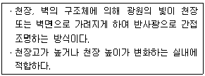
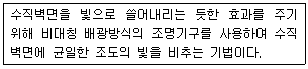
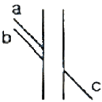
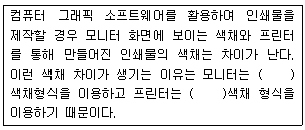

실내건축산업기사 (2011-03-20 기출문제)
1과목: 실내디자인론
1. 실내디자인의 원리 중 휴먼 스케일에 대한 설명으로 옳지 않은 것은?
- 인간의 신체를 기준으로 파악되고 측정되는 척도 기준이다.
- 휴먼 스케일의 적용은 추상적, 상징적이 아닌 기능적인 척도를 추구하는 것이다.
- 휴먼 스케일이 잘 적용된 실내공간은 심리적, 시각적으로 안정된 느낌을 준다.
- 공간의 규모가 웅대한 기념비적인 공간은 휴먼 스케일을 적용하는데 용이하다.
(정답률: 84%)

2. 다음의 동선계획에 대한 설명 중 옳지 않은 것은?
- 동선의 유형 중 직선형은 최단거리의 연결로 통과 시간이 가장 짧다.
- 많은 사람들이 통행하는 곳은 공간 자체에 방향성을 부여하고 주요 통로를 식별할 수 있도록 한다.
- 통로가 교차하는 지점은 잠시 멈추어 방향을 결정할 수 있도록 어느 정도 충분한 공간을 마련해 준다.
- 동선의 유형 중 혼합형은 직선형과 방사형을 혼합한 것으로 통로간의 위계적 질서를 고려하지 않고 단순하게 동선을 처리한다.
(정답률: 90%)
3. 다음의 질감에 대한 설명 중 옳지 않은 것은?
- 매끄러운 재료가 반사율이 높다.
- 촉각 또는 시각으로 지각할 수 있는 어떤 물체 표면상의 특징을 말한다.
- 좁은 실내 공간을 넓게 느껴지도록 하기 위해서는 표면이 거칠고 어두운 재료를 사용하는 것이 좋다.
- 질감은 시각적 환경에서 여러 종류의 물체들을 구분하는데 도움을 줄 수 있는 중요한 특성 가운데 하나이다.
(정답률: 92%)
4. 특수전시방법 중 전시내용을 통일된 형식 속에서 규칙적으로 반복시켜 배치하는 방법으로, 동일 종류의 전시물을 반복하여 전시할 경우 유리한 것은?
- 디오라마 전시
- 파노라마 전시
- 아일랜드 전시
- 하모니카 전시
(정답률: 67%)
5. 주택의 각 실 계획에 관한 다음 설명 중 가장 부적절한 것은?
- 부엌은 작업공간이므로 밝게 처리하였다.
- 현관은 좁은 공간이므로, 신발장에 거울을 붙였다.
- 침실은 충분한 수면을 취해야 하므로 창을 내지 않았다.
- 거실은 가족단란을 위한 공간이므로 온화한 베이지색을 사용하였다.
(정답률: 92%)
6. 다음 설명에 알맞은 건축화 조명방식은?

- 광천장 조명
- 코브 조명
- 코니스 조명
- 캐노피 조명
(정답률: 70%)
7. 다음의 설명에 알맞은 조명 연출기법은?

- 강조기법
- 실루엣 기법
- 월 워싱 기법
- 스파클 기법
(정답률: 83%)
8. 실내디자인의 프로세스 중 기본계획에 대한 설명으로 옳지 않은 것은?
- 스터디 모델링 작업이 이루어진다.
- 기본개념과 제한요소를 설정하여 기본구상을 진행한다.
- 디자인 의도를 시공자에게 정확히 전달하기위해 키플랜(key plan)등을 제작한다.
- 계획안 전체의 기본이 되는 형태, 기능 등을 도면이나 스케치, 다이어그램 등으로 표현한다.
(정답률: 62%)
9. 원룸시스템(one room system)에 대한 설명 중 옳지 않은 것은?
- 제한된 공간에서 벗어나므로 공간의 활용이 자유롭다.
- 데스 스페이스를 만듬으로써 공간 사용의 극대화를 도모할 수 있다.
- 원룸 시스템화 된 공간은 크게 느껴지게 되므로 좁은 공간의 활용에 적합하다.
- 간편하고 이동이 용이한 조립식 가구나 다양한 기능을 구사하는 다목적 가구의 사용이 효과적이다.
(정답률: 75%)
10. 다음 중 부엌의 작업대 배치시 가장 중요하게 고려해야 할 사항은?
- 조명배치
- 마감재료
- 작업동선
- 색채조화
(정답률: 93%)
11. 상품의 유효진열범위에서 고객의 시선이 자연스럽게 머물고, 손으로 잡기에도 편한 높이인 골든 스페이스(Golden Space)의 범위는?
- 500 ~ 850mm
- 850 ~ 1250mm
- 1250 ~ 1400mm
- 1450 ~ 1600mm
(정답률: 88%)
12. 다음 중 실내디자이너의 역할과 가장 거리가 먼것은?
- 독자적인 개성의 표현을 한다.
- 전체 건축물의 구조설비를 계획한다.
- 생활공간의 쾌적성을 추구하고자 한다.
- 인간의 예술적, 서정적 요구에 대한 만족을 해결하려한다.
(정답률: 58%)
13. 다음 중 죠닝계획시 우선적으로 고려할 사항이 아닌 것은?
- 사용빈도
- 사용목적
- 색채선호도
- 단위공간 사용자의 특성
(정답률: 81%)
14. 실내디자인의 원리 중 조화에 대한 설명으로 옳지 않은 것은?
- 복합조화는 동일한 색채와 질감이 자연스럽게 조합되어 만들어 진다.
- 유사조화는 시각적으로 성질이 동일한 요소의 조합에 의해 만들어 진다.
- 동일성이 높은 요소들의 결합은 조화를 이루기 쉬우나 무미건조, 지루할 수 있다.
- 성질이 다른 요소들의 결합에 의한 조화는 구성이 어렵고 질서를 잃기 쉽지만 생동감이 있다.
(정답률: 73%)
15. 상점계획에 관한 설명 중 옳지 않은 것은?
- 매장바닥은 요철, 소음 등이 없도록 한다.
- 대면 판매형식은 판매원 위치가 안정된다.
- 측면 판매형식은 진열면이 협소한 반면 친밀감을 줄 수 있다.
- 레이아웃은 고객에게 심리적 부담감이나 저하아감이 생기지 않도록 한다.
(정답률: 77%)
16. 실내디자인의 계획조건 중 외부적 조건에 속하지 않는 것은?
- 계획대상에 대한 교통수단
- 소화설비의 위치와 방화구획
- 기둥, 보, 벽 등의 위치와 간격치수
- 실의 규모에 대한 사용자의 요구상항
(정답률: 76%)
17. 다음의 공간에 대한 설명 중 옳지 않은 것은?
- 내부 공간의 형태는 바닥, 벽, 천장의 수직, 수평적 요소에 의해 이루어진다.
- 평면, 입면, 단면의 비례에 의해 내부 공간의 특성이 달라지며 사람은 심리적으로 다르게 영향을 받는 다.
- 내부 공간의 형태에 따라 가구유형과 형태, 가구 배치 등 실내의 제요소들이 달라진다.
- 불규칙적 형태의 공간은 일반적으로 한 개 이상의 축을 가지며 자연스럽고 대칭적이어서 안정되어 있다.
(정답률: 86%)
18. 디자인 요소 중 점의 조형효과로 옳지 않은 것은?
- 공간에 한 점을 두면 집중효과가 생긴다.
- 다수의 점을 근접시키면 면으로 지각된다.
- 같은 점이라도 밝은 점은 크고 넓게, 어두운 점은 작고 좁게 보인다.
- 평면에 있는 두 점 사이의 거리가 가까울수록 네거티브라인은 가늘게 나타난다.
(정답률: 71%)
19. 다음 중 수평선(Horizontal Line)이 주는 느낌으로 가장 알맞은 것은?
- 존엄성
- 경쾌
- 위험
- 안정
(정답률: 85%)
20. 창의 종류 중 천창에 대한 설명으로 옳지 않은 것은?
- 벽면을 개구부에 상관없이 다양하게 활용할 수 있다.
- 측창에 비해 채광량은 적으나 바사로 인한 눈부심이 없다.
- 밀집된 건물에 둘러싸여 있어도 일정량의 채광을 확보 할 수 있다.
- 국부조명처럼 실내의 어느 한 지점을 밝게 비추어 강조 할 수 있다.
(정답률: 72%)
2과목: 색채 및 인간공학
21. 다음 중 실내 면에 대한 추천 반사율이 적절하지 않은 것은?
- 천장 : 80 ~ 90%
- 바닥 : 20 ~ 40%
- 가구 : 30 ~ 40%
- 창 또는 벽면 : 20 ~ 30%
(정답률: 58%)
22. 인간 - 기계의 특성 중 인간이 기계보다 우수한 기능은?
- 명시도니 프로그램에 따라 정량적이 정보처리를 한다.
- 반복적인 작업을 신뢰성 있게 수행한다.
- 특정 방법이 실패할 경우 다른 방법을 고려하여 선택한다.
- 물리적인 양을 정확히 계산하거나 측정한다.
(정답률: 85%)
23. 다음 중 폰(Phon)과 손(sone)에 관한 설명으로 틀린 것은?
- 40dB의 1000Hz 순음의 크기를 1sone이라 한다.
- 음량 수준이 10phon 증가하면 음량(sone)은 4배가 된다.
- 한 음의 phon 값으로 표시한 음량 수준은 이 음과 같은 크기로 들리는 1000Hz 순음의 음압 수준(dB)이다.
- 음량균형기법을 사용하여 정량적 평가를 하기 위한 음량수준 척도를 작성하였고, 그 단위를 phon이라 한다.
(정답률: 61%)
24. 다음 중 전신 진동이 인간의 성능에 미치는 영향으로 틀린 것은?
- 진동은 진폭에 비례하여 시력을 손상시킨다.
- 안정되고 정확한 근육조절을 요하는 작업의 능력이 저하된다.
- 반응시간 등 중앙신경처리에 관한 임무는 진동의 영향을 덜 받는다.
- 진동은 진폭에 비례하여 추적능력을 손상하며, 30Hz 이상의 진동수에서 가장 심하다.
(정답률: 43%)
25. 다음 중 제어장치의 조종반응비율(C/R 비)에 관한 설명으로 옳은 것은?
- C/R비가 작으면 지침의 이동시간과 조종시간은 많아진다.
- C/R비가 작으면 지침의 이동시간과 조종시간은 적어진다.
- C/R비가 크면 지침의 이동시간은 작아지지만, 조종시간은 많아진다.
- C/R비가 크면 지침의 이동시간은 커지지만, 조종시간은 적게 걸린다.
(정답률: 39%)
26. 다음 중 소음에 의한 청력 손실이 가장 큰 주파수는?
- 1000Hz
- 4000Hz
- 10000Hz
- 20000Hz
(정답률: 62%)
27. 다음 그림과 같은 착시 현상과 가장 관계가 깊은 것은?

- Poggendorf의 착시(위치 착오)
- Kohler 의 착시 (윤곽 착오)
- Hering의 착시 (분할 착오)
- Muler-Lyer의 착시(동화 착오)
(정답률: 71%)
28. 다음 중 앉아 있을 때 가장 큰 힘이 작용하는 제어장치의 손잡이 위치는?
- 어깨높이
- 가슴높이
- 무릎높이
- 팔꿈치높이
(정답률: 63%)
29. 다음 중 인간의 오류를 줄이는 가장 적극적인 방법은?
- source control
- path control
- receiver control
- 작업조건의 법제화
(정답률: 55%)
30. 다음 중 시각적 표시장치에 있어 눈금의 수열로 적절하지 않은 것은?
- 1,2,3…
- 3,6,9…
- 5,10,15…
- 10,20,30…
(정답률: 77%)
31. 다음 중 식물의 이름에서 유래된 관용색명은?
- 피콕 블루(Peacock blue)
- 세피아(sepia)
- 에메랄드 그린(emerald green)
- 올리브(olive)
(정답률: 84%)
32. 색채의 중량감에 대한 설명으로 틀린 것은?
- 중량감은 사용색에 따라 가볍게 느끼기도 하고 무겁게 느끼기도 하는 것이다.
- 중량감은 적절히 활용하면 작업 능률을 높일 수 있다.
- 중량감은 색상보다 명도의 영향이 큰 편이다.
- 중량감은 채도와 관련이 있어 일반적으로 채도가 낮은 색이 가볍게 느껴진다.
(정답률: 75%)
33. 우리에게 잘 알려진 배색으로서 저녁노을, 가을의 붉은 단풍잎, 동물과 곤충 등의 색들이 조화된다는 색채조화의 원리는?
- 질서성의 원리
- 친근성의 원리
- 명료성의 원리
- 보색의 원리
(정답률: 81%)
34. 색채조화의 원리 중 가장 보편적이며 공통적으로 적용할 수 있는 원리는 저드(judd, D. B.)가 주장하는 정성적 조화론에 속하지 않는 것은?
- 질서의 원리
- 친근성의 원리
- 명료성의 원리
- 보색의 원리
(정답률: 70%)
35. 교통 표지판은 주로 색의 어떤 성질을 이용하는 가?
- 진출성
- 반사성
- 대비성
- 명시성
(정답률: 77%)
36. 오스트발트의 색상환을 구성하는 4가지 기본색은 무엇을 근거로 한 것인가?
- 헤링(Hering)의 반대색설
- 뉴턴(Newton)의 광학이론
- 영ㆍ헬름홀쯔(Young-Helmholtz)의 색각이론
- 맥스웰(Maxwell)의 회전색 원판 혼합이론
(정답률: 60%)
37. ( )안에 들어갈 내용을 순서대로 맞게 짝지은 것은?

- HVC - RGB
- RGB 0 CMYK
- CMYK - Lab
- XYZ - Lab
(정답률: 79%)
38. 동일색상의 경우, 큰 면적의 색은 작은 면적이 색견본을 보는 것보다 화려하고 박력이 가해진 인상으로 보이는 것을 무엇이라고 하는가?
- 색각이상
- 게슈탈트의 해석
- 매스 효과
- 연변대비
(정답률: 49%)
39. 중간채도의 빨간색을 회색바탕 위에 놓은 것보다 선명한 빨강바탕 위에 놓았을 때 채도가 더 낮아 보이는 현상은?
- 채도대비
- 색상대비
- 명도대비
- 보색대비
(정답률: 63%)
40. “M = 0/C”는 문스펜서의 미도를 나타내는 공식이다 “0”는 무엇을 나타내는가?
- 환경의 요소
- 복잡성의 요소
- 구성의 요소
- 질서성의 요소
(정답률: 68%)
3과목: 건축재료
41. 다음 합성수지판류 중 색이나 투명도가 자유로우나 화재시 Cl2가스 발생이 큰 것은?
- 염화비닐판
- 폴리에스테르판
- 멜라민 치장판
- 페놀수지판
(정답률: 69%)
42. 얇은 강판에 골모양을 내어 만든 강판 성형품으로 콘크리트슬래브의 거푸집패널 또는 바닥판 및 지붕판으로 사용되는 금속성형 가공제품은?
- 데크플레이트(deck plate)
- 스팬드럴 패널(spandrel panel)
- 익스팬디드 메탈(expanded metal)
- 와이어라스(wire lath)
(정답률: 48%)
43. 수지를 지방유와 가열융합하고, 건조제를 첨가한 다음 용제를 사용하여 희석하여 만든 도료는?
- 유성바니시
- 래커
- 유성페인트
- 내열도료
(정답률: 66%)
44. 목재를 건조시키는 목적과 가장 관계가 먼 것은?
- 접착의 개선
- 강도의 증진
- 도장의 용이
- 내화성의 강화
(정답률: 65%)
45. 철근콘크리트구조의 부착강도에 대한 설명으로 옳지 않은 것은?
- 최초 시멘트페이스트의 점착력에 따라 발생한다.
- 콘크리트 압축강도가 증가함에 따라 일반적으로 증가한다.
- 압축강도가 클수록 부착강도의 증가율은 높아진다.
- 이형철근의 부착강도가 원형철근보다 크다.
(정답률: 37%)
46. 벽, 기둥 등의 모서리를 보호하기 위하여 미장바름을 한 때 붙이는 보호용 철물은?
- 조이너
- 코너비드
- 논슬립
- 펀칭메탈
(정답률: 85%)
47. 도료상태의 방수재를 바탕면에 여러번 칠하여 방수막을 형성하는 방수법은?
- 아스팔트 루핑방수
- 도막방수
- 시멘트 방수
- 시트 방수
(정답률: 79%)
48. 목재는 화재가 발생하면 순간적으로 불이 확산하여 큰 피해를 주는데 이를 억제하는 방법으로 가장 부적절한 것은?
- 목재의 표면에 플라스터로 피복한다.
- 염화비닐수지로 도포한다.
- 방화페인트로 도포한다.
- 인산암모늄 약제로 도포한다.
(정답률: 70%)
49. 창호 철물 중 열려진 여닫이문이 저절로 닫히게 하는 것은?
- 도어 스톱(door stop)
- 도어 캐치(door catch)
- 도어 체크(door check)
- 도어 홀더 (door holder)
(정답률: 70%)
50. 다음 중 콘크리트의 응결속도가 빨라지는 경우가 아닌 것은?
- 조강성의 시멘트를 사용할수록
- 동일 시멘트상에서 슬럼프가 클수록
- 물시멘트가 작을수록
- 골재나 물에 염분이 포함될수록
(정답률: 36%)
51. 프탈산과 글리세린 수지에 지방산, 유지, 천연수지를 넣어 변성시킨 포화 폴리에스테르 수지로써 페인트, 바니시, 래커 등의 도료로 이용되는 것은?
- 실리콘 수지
- 멜라민 수지
- 알키드 수지
- 홀리우레탄 수지
(정답률: 49%)
52. 내약품성, 내마모성이 우수하여 화학공장의 방수층을 겸한 바닥 마무리재로 가장 적합한 것은?
- 합성구분자 방수
- 무기질 침투방수
- 아스팔트 방수
- 에포시 도막방수
(정답률: 72%)
53. 다음 중 수성페인트의 원료로 사용되지 않는 것은?
- 안료
- 카세인
- 아리비아 고무
- 건성유
(정답률: 45%)
54. 벽돌벽 두께 1.5B, 벽면적 40m2 쌓기에 소요되는 붉은 벽돌의 소요량은? (단, 벽돌벽은 표준형이며 할증률을 고려한다.)(오류 신고가 접수된 문제입니다. 반드시 정답과 해설을 확인하시기 바랍니다.)
- 8850장
- 8960장
- 9229장
- 9408장
(정답률: 58%)
55. 시멘트 저장시 주의사항으로 옳지 않은 것은?
- 시멘트는 방습적인 구조로 된 사일로 또는 창고에 종류별로 구분하여 저장한다.
- 지상30cm이상 되는 통풍이 잘 되는 마루위에 보관한다.
- 포대의 올려쌓기는 13포대 이하로 한다.
- 조금이라도 굳은 시멘트는 사용하지 않는다.
(정답률: 70%)
56. 시멘트 모르타르 미장에 대한 설명으로 옳지 않은 것은?
- 바름층별로 배합비를 달리하는 것이 좋다.
- 시멘트와 모래의 배합비는 1:1~1:3정도이다.
- 잔모래를 많이 사용할수록 균열발생은 줄어든다.
- 부배합(富配合)일수록 균열발생이 많다.
(정답률: 57%)
57. 석고플라스터 미장재료에 대한 설명으로 옳지 않은 것은?
- 응결시간이 길고, 건축수축이 크다.
- 가열하면 결정수를 방출하므로 온도상승이 억제된 다.
- 물에 용해되므로 물과 접촉하는 부위에서 사용은 부적합하다.
- 일반적으로 소석고를 주성분으로 한다.
(정답률: 44%)
58. KS규정에 의하면 1종 점토벽돌의 흡수율은 최대 얼마이하인가?
- 10%
- 15%
- 20%
- 23%
(정답률: 43%)
59. 다음 중 프라이애쉬 시멘트의 특징으로 옳지 않은 것은?
- 수밀성이 좋다.
- 건조 수축이 적다.
- 장기강도가 크다.
- 수화열이 높다.
(정답률: 58%)
60. 유리의 주성분 중 가장 많이 함유되어 있는 것은?
- 석회
- 소다
- 규산
- 붕산
(정답률: 64%)
4과목: 건축일반
61. 다음 중 대리석의 줄눈으로 많이 쓰이는 것은?
- 맞댄줄눈
- 둥근줄눈
- 면회줄눈
- 오목줄눈
(정답률: 58%)
62. 계단의 구성에서 보행에 피로가 생길 우려가 있어 도중에 3~4단을 하나의 넓은 단으로 하거나 꺾여 돌아가는 곳에 넚게 만든 것을 무엇이라 하는가?
- 계단실
- 디딤단
- 계단중정
- 계단참
(정답률: 76%)
63. 조적식 구조의 칸막이벽의 두께는 최소 얼마 이상으로 해야 하는가?
- 90mm
- 120mm
- 150mm
- 200mm
(정답률: 67%)
64. 한국 정원(庭園)에 관한 설명으로 옳은 것은?
- 자연과의 조화를 강조하였으며 전문가의 역할은 거의 없었다.
- 한국 정원은 동양정원에 속하므로 중국이나 일본 정원과 대동소이하다.
- 한국 정원은 앞뜰을 중요한 요소로 삼고 후원은 잘 꾸미지 않았다.
- 건물 뒤쪽 언덕을 단형정원으로 꾸미게 되는 것이 보통이다.
(정답률: 56%)
65. 철근 콘크리트조의 보의 단면2차 모멘트를 크게 하기 위한 방법 중 가장 유리한 것은? (단, 주근량은 같다)
- 보의 깊이를 크게 한다.
- 보의 폭을 크게 한다.
- 고강도 콘크리트를 사용한다.
- 늑근의 설치 간격을 줄인다.
(정답률: 37%)
66. 콘크리트 양생시 주의사항 중 옳지 않은 것은?
- 일광의 직사나 풍우에 대해 노출면을 보호한다.
- 수화작용이 이루어지지 않도록 습기를 제거하는 것이 좋다.
- 일정 온도를 유지하여 경화시키고 급격한 건조를 피한다.
- 충격 및 하중을 가하지 않도록 보호한다.
(정답률: 62%)
67. 다음 중 색이름과 먼셀기호가 잘못 연결된 것은?
- 빨강 - R
- 주황 - YR
- 자주 - PB
- 연두 - GY
(정답률: 72%)
68. 다음 중 건축구조기술사의 협력을 받아 구조의 안전을 확인 하여야 하는 건축물 기준으로 옳지 않은 것은?
- 6층 이상인 건축물
- 한쪽 끝은 고정되고 다른 끝은 지지되지 아니한 구조로 된 차양 등이 외벽의 중심선으로부터 3m 이상 돌출된 건축물
- 다중이용 건축물
- 기둥과 기둥사이의 거리가 20미터 이상인 건축물
(정답률: 45%)
69. 철근콘크리트구조에서 철근과 콘크리트의 부착력에 대한 설명 중 옳지 않은 것은?
- 콘크리트의 부착력은 철근의 주장에 비례한다.
- 철근의 표면상태와 단면모양에 따라 부착력이 좌우된다.
- 부착력은 정착길이를 크게 증가함에 따라서 비례 증가되지 않는다.
- 압축강도가 큰 콘크리트일수록 부착력은 작아진다.
(정답률: 58%)
70. 다음 소방시설 중 소화설비에 해당되지 않는 것은?
- 연결살수설비
- 스프링클러설비
- 옥외소화전설비
- 소화기구
(정답률: 74%)
71. 근대 건축 작품과 건축가의 연결이 옳지 않은 것은?
- 킴벨 미술관 - 루이스 칸
- 롱샹 교회당 - 르 꼬르뷔제
- 시그램 빌딩 - 미스 반데 로에
- 뉴욕 구겐하임 미술관 - 그로피우스
(정답률: 43%)
72. 산실주택의 형식 중 일(-)자형 주택에 대한 설명으로 옳지 않은 것은?
- 모든 방을 남쪽으로 개구부를 만들 수 있다.
- 우리나라 농촌 민가에서는 보기 드문 형식이다.
- 중남이남지역에서 볼 수 있는 주택이다.
- 방앞에 툇마루를 달거나 한칸의 마루를 들이기도 한다.
(정답률: 63%)
73. 다음 목조 부재 중 일반적으로 단면이 가장 큰 것은?
- 수목장
- 꿸대
- 오림목
- 체목
(정답률: 38%)
74. 문화 및 집회시설 중 공연장의 개별관람석의 각 출구의 유효너비는 최소 얼마 이상인가? (단, 바닥면적이 330m2 이상인 경우)
- 1.2m
- 1.5m
- 1.8m
- 2.1m
(정답률: 57%)
75. 윌리엄 모리스의 모리스 주식회사(Morris & co) 모체가 된 레드 하우스(Red House)를 설계한 사람은?
- 요셉 호프만(Josef Hoffman)
- 어니스트 김슨(Ernest Gimson)
- 마독스 브라운(Madox Brown)
- 필립 웨브(Philp webb)
(정답률: 53%)
76. 20세기 중반의 실내장식가 모리스 라피더스(Morris Lapi-dus)에 관한 설명 중 옳은 것은?
- 지중해 연안에 위치한 일련의 휴양지 호텔장식을 하였다.
- 미국의 중류가정의 실내장식을 함으로서 실내장식의 개념을 대중화시키는데 기여하였다.
- 현대적인 개념의 구성주의를 주된 모티브로 채택하였다.
- 자연에서 모티를 채택하고 매우 독창적인 디자인 양식을 추구하였다.
(정답률: 42%)
77. 다음 중 주심포 양식의 건물은?
- 창덕국 인정정
- 수덕사 대웅전
- 봉정사 대웅전
- 창덕궁 명정전
(정답률: 49%)
78. 건축물의 내부에 설치하는 피난계단의 구조에 대한 기중으로 옳지 않은 것은?
- 계단실은 창문ㆍ출입구 기타 개구부를 제외한 당해 건축물의 다른 부분과 내화구조의 벽으로 구획할 것
- 계단실에는 예비전원에 의한 조명설비를 할 것
- 계단실의 바깥쪽과 접하는 창문 등으로부터 2m 이상의 거리를 두고 설치할 것
- 계단실의 실내에 접하는 부분의 마감은 난연재료로 할 것
(정답률: 73%)
79. 다음 중 문화집회 및 운동시설로서 스프링클러 설비를 전층에 설치하여야 할 경우에 대한 기준으로 옳지 않은 것은?
- 수용인원이 100인 이상인 것
- 무대부가 4층 이상의 층에 있는 경우에는 무대부의 면적이 200m2 이상인 것
- 무대부가 지하층 무창층에 있는 경우 무대부의 면적이 300m2 이상인 것
- 영화상영관의 용도로 쓰이는 층의 바닥면적이 지하층 또는 무창층인 경우 500m2이상인 것
(정답률: 45%)
80. 건축물에 설치하는 급수배수 등의 용도로 쓰이는 배관설비의 설치 및 구조에 관한 기준으로 옳지 않은 것은?
- 배관설비의 오수에 접하는 부분은 방수재료를 사용할 것
- 지하실 등 공공하수도로 자연배수를 할 수 없는 곳에는 배수용량에 맞는 강제배수시설을 설치할 것
- 우수관과 오수관은 분리하여 배관할 것
- 콘크리트구조체에 배관을 매설하거나 배관이 콘크리트구조체를 관통할 경우에는 구조체에 덧관을 미리 매설하는 등 배관의 부식을 방지하고 그 수선 및 교체가 용이하도록 할 것
(정답률: 46%)